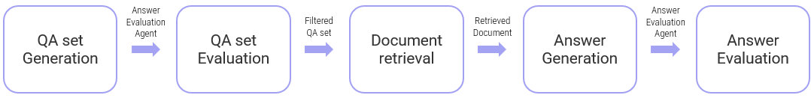

Medly
Medly is an platform designed to support both physicians and patients throughout the pre-surgery process. It provides structured assistance by recording and summarizing consent forms for patients while helping them understand medical terminology. For physicians, it offers a chatbot that enables efficient searching of essential pre-surgery information, including medical research papers and various surgical guidelines.
Core Features:
 GitHub
GitHub

I led the development of the surgical guideline chatbot for physicians, focusing on machine learning implementation and UI design, while collaborating closely with other team members on various aspects of the project:
Physicians and patients preparing for surgery
Mobile App
5 weeks
Processing data from multiple sources with different PDF formats (ranging from 50 to 280 pages) and refining it for chatbot integration. Understanding and organizing all the content manually is impractical, necessitating a structured format that computers can interpret.
💡 Solution: Text was extracted from PDFs and vectorized through embedding, enabling the system to process language autonomously. Additionally, chunk sizes were optimized (1000 characters with 100-character overlap) to maintain context while ensuring the summarization was not overly condensed, improving chatbot performance.
Ensuring the reliability of medical chatbot responses while preventing hallucinations, and optimizing reference section readability for busy physicians.
💡 Solution: The system provides reference areas with original data sources, enabling physicians to verify AI responses. The RAG model uses high strictness and a low temperature setting to prevent hallucinations. Chunking methods optimize reference text length, and preprocessing removes redundant headers and irrelevant characters for clarity.
Searching across multiple diseases sometimes retrieves reference data from unrelated medical documents.
💡 Solution: Each extracted medical document is tagged with its source and associated disease name, stored as a structured JSON file. The system ensures that GPT responses only retrieve information matching the specific disease name.

The chatbot is designed to help physicians easily inquire about surgical guidelines. It stores up to five previous conversation records, allowing for context-aware interactions. By tapping on a generated response, users can view the original text used to generate the answer, enhancing the reliability of the response.

Process Overview:

Key Metrics:
- Answer Accuracy: Measures correctness of generated responses.
- Faithfulness: Measures how factually consistent a response is with the retrieved context based on the RAGAS metric.
- Recall@5: Determines if the correct context is among the top 5 retrieved documents.
Base Model vs. RAG Model Comparison:
- The RAG model significantly outperformed the base model in answer accuracy and faithfulness.
- The best performance was achieved with 1000-character chunks and text-embedding-ada-002.
- Longer chunk sizes led to decreased retrieval performance due to information dilution.
- The text-embedding-ada-002 model provided more precise vectorization, improving semantic search accuracy.


Evaluation of Retrieval:
- The performance of different embedding models and chunk sizes was assessed based on retrieval accuracy.
- Recall@5 was used to measure how often the correct context appeared in the top 5 retrieved results.
- The combination of 1000-character chunks and text embedding-ADA-002 had the highest faithfulness and also scored well on Recall@5.
Final Decision: Based on the evaluation, the combination of 1000-character chunks and text-embedding-ada-002 was selected for optimal performance.

Reliable Data Sources: Surgical guideline PDFs were collected from authoritative sources such as NCCN, NCI, and PubMed Central (PMC), covering a total of 64 diseases.
Data Preprocessing: Only text within the main content area was extracted, excluding headers and footers. Unnecessary text and repeated characters were removed, and any remaining noise was eliminated using regular expressions.
Chunk Generation: To enhance search performance and maintain context, text was divided into chunks of 1,000 characters with a 100-character overlap.
JSON File Storage: Data was stored in JSON format, including disease names, chunk IDs, and data sources to ensure reliability.

Data vectorizing:
Data is vectorized using text-embedding-ada-002 model, followed by the creation of indexes and indexers.
Disease-Based Search:
A disease field was added to the index to enable disease-specific searches.
Enhanced Search Performance:
Semantic search was integrated to improve retrieval accuracy and relevance.
Reference Area Display: Implemented to enhance response credibility by showing relevant source information. Only 'chunk', 'disease', and 'source fields' are extracted for improved data reliability and faster verification.
Parameter Settings: Configured with strict=5 and temperature=0.1 to ensure accurate and reliable responses.
Context Retention: Stores up to five previous responses to allow for follow-up questions and context-aware interactions.
Multilingual Support: Translates user queries into English before sending a request to the GPT model, improving search performance. Detects the language of the original question and returns the response in the same language for seamless multilingual support.

- Responses are reviewed by practicing physicians and validated through Human Evaluation.
- Received direct feedback from physicians expressing interest in using the chatbot in real-world medical settings.
- Conducted over 100 tests to verify the alignment between generated responses and reference areas, ensuring accurate outputs.
Deployed Flask app to Azure App Service and configured environment variables.
Set up GitHub Actions CI/CD for automatic deployment on main branch updates, handling Python setup, dependencies, build, and deployment via .yml file.
Tested API endpoints using Postman to validate requests and responses.